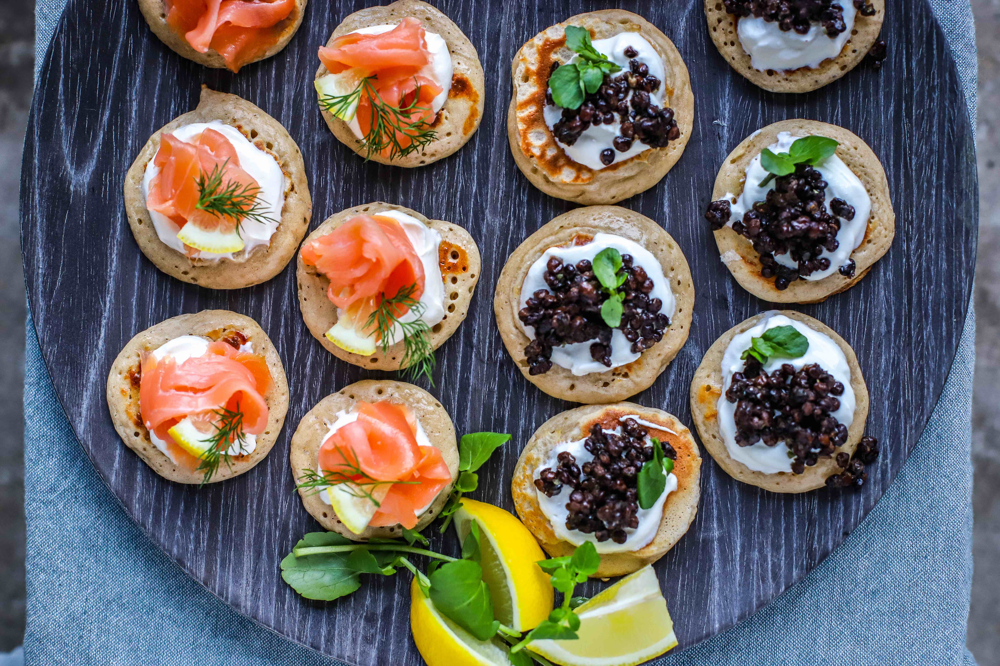

These traditional Russian pancakes are prepared with flour, eggs, milk, yeast, and a pinch of salt. What distinguishes them from other pancakes is the addition of yeast, since similar equivalents mostly do not add any leavening agents. The batter is poured over a hot pan, shaped into a circle, and fried for a couple of minutes on both sides.
Meal prep time : 25 minutes
Servings : 5